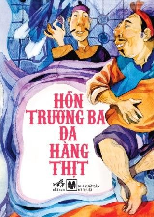

Hồn Trương Ba - Da hàng thịt
Trích đoạn Hồn Trương Ba da hàng thịt đưa vào dạy trong SGK Ngữ văn lớp 12 là một phần thuộc Cảnh VII – cũng là cảnh cuối cùng của vở kịch, được đặt tên là Thoát ra nghịch cảnh
Lưu Quang Vũ có một khả năng quan sát, nắm bắt những vấn đề nóng bỏng của đời sống một cách nhanh nhạy, sắc sảo và tinh tế cùng với tri thức giàu có về nhiều mặt. Lưu Quang Vũ rất tài trong việc đưa những chi tiết có thật trong cuộc sống trở thành những chi tiết nghệ thuật mang sức khái quát, có ý nghĩa mà không sống sượng; đồng thời đưa tác phẩm nghệ thuật phổ biến vào đời sống một cách thoải mái như cuộc sống đang được trung thực tái hiện lại.
Trọng tâm của lớp kịch là cuộc đối thoại giữa Hồn và Xác Trương Ba. Do đó lời thoại ở đây vừa có thể coi là độc thoại vừa có thể coi là đối thoại. Nó là một lời thoại đặc biệt, vừa chứa đựng mâu thuẫn vừa mang tính hành động, thúc đẩy tình huống kịch phát triển đến mức cao nhất. Cuộc đối thoại giữa Hồn và Xác là đỉnh cao tư tưởng triết lý của vở kịch. Cuộc đối thoại đó cùng với thái độ và những lời đối thoại của những người ruột thịt thân yêu nhất đã dẫn đến hành động quyết liệt - kiên quyết chối từ một cuộc sống chắp vá hồn nọ xác kia của Trương Ba. Lưu Quang Vũ đã để cho nhân vật của mình chọn một con đường tưởng như tiêu cực nhưng hết sức cần thiết và đúng đắn: Rời bỏ cõi đời này để được đúng là mình, để giữ trong ký ức những người thân kỷ niệm tốt đẹp về mình. Có nhà nghiên cứu cho rằng “cuộc vật lộn giữa “Hồn Trương Ba” và “Da Hàng thịt” thực chất là cuộc giao tranh giữa hai linh hồn trong một thân xác”(3). Lưu Quang Vũ đã kế thừa tư tưởng của truyện cổ dân gian. Anh cũng nhấn mạnh vai trò quan trọng hơn của linh hồn so với thể xác. Hàng loạt nhân vật phụ được hư cấu đã phát ngôn cho tư tưởng đó của tác giả. Trong khi tất cả những người thân, kể cả người vợ, phủ nhận, xa lánh Trương Ba trong xác anh hàng thịt, thì cô con dâu lại càng thông cảm với ông hơn. Mặc dù cô cũng nhận ra bao nhiêu điều ngang trái xuất hiện nơi con người Trương Ba. Bằng những lời mộc mạc, giản dị, cô đã nói khá đúng, khá cơ bản về linh hồn: “Thày vẫn dạy chúng con: cái bề ngoài có quan trọng gì, chỉ có tấm lòng yêu thương và trí tuệ cao sáng của con người ta là đáng kể”; “Đã gọi là hồn làm sao có hình thù, bởi nó không là vuông hay tròn, mà là vui, buồn, mừng, giận, yêu, ghét…”
 Hồn Trương Ba - Da hàng thịtQua hàng loạt lời thoại của các nhân vật, nhà viết kịch đã thể hiện một cái nhìn biện chứng đối với mối quan hệ Hồn - Xác. Người sống mượn hồn hay xác của kẻ khác thì cũng đều bất ổn như nhau, đều không còn là mình nữa. Một linh hồn dù tốt đẹp khi trú ngụ trong thân xác khác cũng sẽ bị biến dạng, bởi nó bị chi phối theo thói quen và bản năng của thân xác đó, hơn nữa nó luôn bị dằn vặt trong mặc cảm giả dối và ích kỉ. Chưa kể còn hàng loạt những hệ luỵ, rắc rối khác như đã xảy ra ở các màn kịch trước. Cuộc đấu tranh này cũng cảnh báo khả năng lấn át của thể xác, của những nhu cầu tầm thường đối với khát vọng sống cao đẹp.